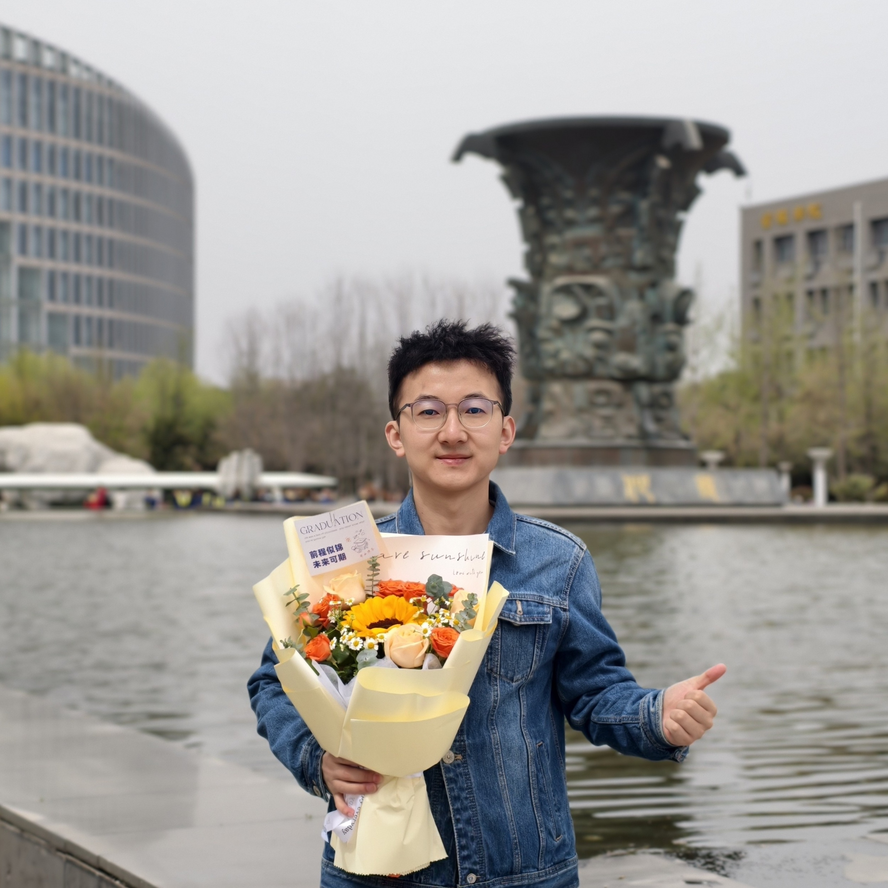

Guangyu Guo (郭广宇)
- Current: algorithm expert of Alibaba DAMO Academy; postdoc of Zhejiang University.
- Eamil: gyguo95 at gmail dot com
- Research interests: Artificial Intelligence, especially in computer vision and medical image analysis.

News
- [2026] Two paper on gaze target estimation is accepted to TMM and TCYB
- [2025] Join DAMO Academy, Alibaba Group.
- [2025] One paper on lung ultrasound video analysis is accepted to JBHI.
- [2025] One paper on vision-language learning for nuclei segmentation is accepted to TMI.
- [2024] One paper on knowledge distillation is accepted to TPAMI.
Academic Service
- Reviewer of Conference: CVPR, NeurIPS, ICCV, ECCV, AAAI, ACM MM, MICCAI
- Reviewer of Journal: TPAMI, TNNLS, TMI, TMM, TCSVT, Pattern Recognition